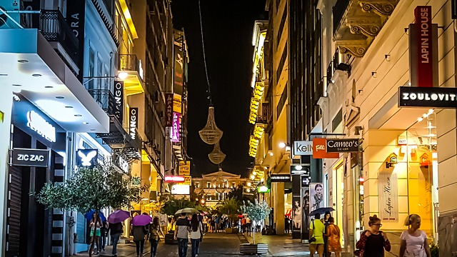

Itinerantur
Berceau de la civilisation occidentale et vieille de plus de 2500 ans, la capitale grecque continue de fasciner et reste un eldorado pour les passionnés d’histoire et d’archéologie mais devient également un incontournable pour ceux qui veulent sentir le cœur battant de la Grèce moderne. Cependant, la cité grecque est trop souvent une simple escale entre l’aéroport et les îles grecques. Bien qu’elle puisse être difficile à apprivoiser, Athènes est une ville aux multiples visages qui mérite plus qu’un passage éclair sur la mythique colline de l’Acropole. Prenez le temps de la découvrir pour y apprécier son rythme de vie unique.

Situé à flanc de coteau, au pied de l'Acropole et de ses temples anciens, Pláka est un quartier aux allures de village qui comprend d'étroites ruelles pavées bordées de minuscules boutiques proposant bijoux, vêtements et céramiques locales. Les cafés avec terrasse et les restaurants grecs de famille restent ouverts tard le soir, tandis que le Cine Paris projette des films classiques en plein air. À proximité, les maisons blanchies à la chaux du quartier d'Anafiotika confèrent à la petite enclave des airs d'île grecque.